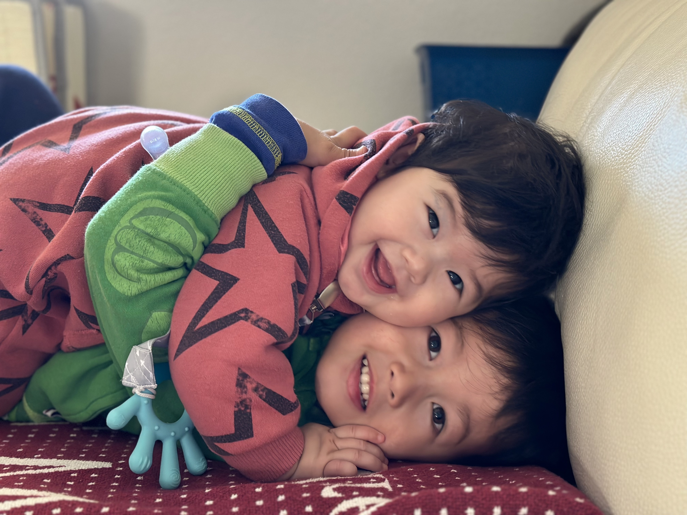

David Davies

Graduated with a Bachelor's degree in Computer Science from SHSU. Currently working as a QA Automation Engineer for Apple's website.
Completed extension course with Berkeley for Full Stack Web Development. Eagerly working towards moving ahead within my career feild in the future.
I have been coding and working in the industry for a handful of
years now, and I have to say, one of the best life decisions I have
made.
Love the career path I have chosen. Especially with the advent of
new technologies on the horizon.
Currently hammering out a machine learning/Nueral Network course
from Stanford.
Personal Life

I have two wonderful kiddos that mean the world to me! Hello World
😃
Being a parent has taught me many things. Changes how I view the
world, mostly because I have to dictate everything I see or do for
the kids! Feels weird narrating your life sometimes haha Having an
older Son younger daughter is feichang hao (非常好). The characters
for "good" is also son and daughter in mandarin. 😉
I studied Madarin for a few semesters at the local community
college.
Although, My eldest is catching up to me quickly in mandarin,
neither of us is fluent.
Great language to learn for business opportunities.
Hope my children will learn both spanish and mandarin in the future.
Should help them out in life yeah?
Pic is of me studying mandarin in china at a wedding 😎
... my wedding ...
I can't read lol
Free Time!

As you can see I enjoy Skateboarding and playing Sports such as:
Snowboarding in the winter.
Playing tennis with the wife.
Playing
Soccer with the kiddos.
I enjoy playing video games with my friends.
Although, I don't get to play very much these days, it is one of my
favorite hobby's.
Also fan of table top games! D&D and MTG being some of my favorites!
I'm a bit of a nerd. Checkout my browser based game in my porfolio
👉 game time!
Connect with Me